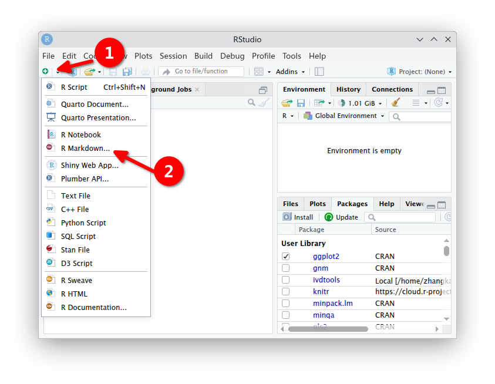
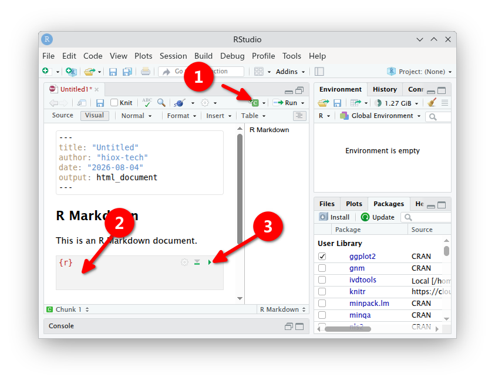
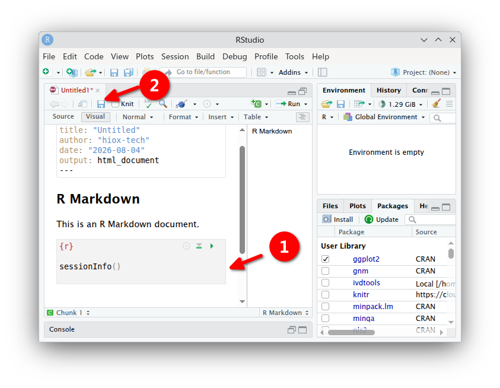

代码
install.packages(c("ivdtools", "rmarkdown", "knitr"))本文说明如何建立 ivdtools 分析环境、创建 qmd 项目、导入和核验数据、执行渐进式分析并保存可复现结果。
ivdtools 要求 R >= 4.1.0。建议使用仍受支持的较新 R 版本，并保持项目内所有人员的主版本和依赖版本一致。
从 CRAN 下载对应系统的安装程序：https://cran.r-project.org/。
系统仓库可以安装基础 R：
sudo apt update
sudo apt install r-base r-base-devsudo dnf install R R-develLinux 发行版仓库中的 R 版本可能较旧；若项目需要较新的 R，应按照 CRAN 对应发行版的说明配置软件源。
推荐使用 .qmd 或 .Rmd 文件记录代码、文字、表格和图形。
| 软件 | Windows | Linux | macOS | 适用情况 |
|---|---|---|---|---|
| RStudio | ✓ | ✓ | ✓ | 开箱即用，适合初学者和常规分析 |
| Positron | ✓ | ✓ | ✓ | 适合希望使用新一代 Posit IDE 的用户 |
| Visual Studio Code | ✓ | ✓ | ✓ | 需要配置 R、Quarto 等扩展 |
| Jupyter | ✓ | ✓ | ✓ | 需要 Python、Jupyter 和 R kernel |
| PyCharm | ✓ | ✓ | ✓ | 需要相应 R 支持和额外配置 |
| cantor | ✓ | 开发中，最近才相对稳定 |
RStudio 和 Positron 可从 https://posit.co/downloads/ 获取；Visual Studio Code 可从 https://code.visualstudio.com/Download 获取。
当 ivdtools 已在所用 CRAN 镜像发布时：
install.packages(c("ivdtools", "rmarkdown", "knitr"))数据导入可按需安装附加包：
install.packages(c("readr", "readxl"))在 RStudio 中选择 File > New File > R Markdown。

最小文档模板：
---
title: "IVD 分析报告"
author: "分析人员"
date: "填写报告日期"
output:
html_document:
toc: true
number_sections: true
---基础 R：
dat <- read.csv(
"data-raw/method-comparison.csv",
stringsAsFactors = FALSE,
check.names = FALSE
)使用 readr：
dat <- readr::read_csv(
"data-raw/method-comparison.csv",
show_col_types = FALSE
)dat <- readxl::read_excel(
"data-raw/method-comparison.xlsx",
sheet = "data"
)若 Excel 文件包含公式、合并单元格或人工格式，应先确认导入后的值、列名和数据类型与原表一致。
在 .Rmd 中插入 R 代码块，使用代码块右上角按钮运行当前块，或从上到下运行全部代码。

为确保可复现，最终报告应通过全新 R 会话从头渲染，而不是只依赖 Console 中已经存在的对象。
读取帮助页中说明的结果字段后，可写出 CSV：
# 示例：实际字段应根据相应对象帮助页确认
result_table <- mc$regression
saveRDS(result_table, "tables/regression-result.rds")复杂对象优先保存为 RDS，以保留类和属性；需要与其他软件交换时再整理为扁平数据框并导出 CSV。
所有图形使用ggplot绘制。
p <- plot(mc, type = "bland_altman")
ggplot2::ggsave(
"figures/bland-altman.png",
plot = p,
width = 7,
height = 5,
dpi = 300
)在 RStudio 中点击 Knit，或者运行：
rmarkdown::render(
"report/analysis.Rmd",
output_format = "html_document",
clean = TRUE
)分析完成后记录环境信息：
sessionInfo()